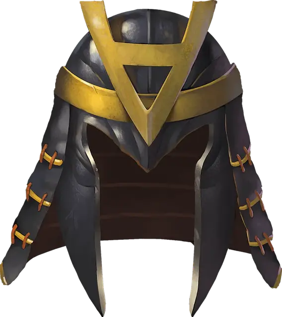

Шлем телепортации
Helm of Teleportation
Чудесный предмет, редкий (требуется настройка)

Рекомендованная стоимость 501-5 000 зм
У этого шлема есть 3 заряда. Если вы его носите, вы можете действием потратить 1 заряд, чтобы наложить им заклинание телепортация [teleport]. Шлем ежедневно восстанавливает 1к3 заряда на рассвете.